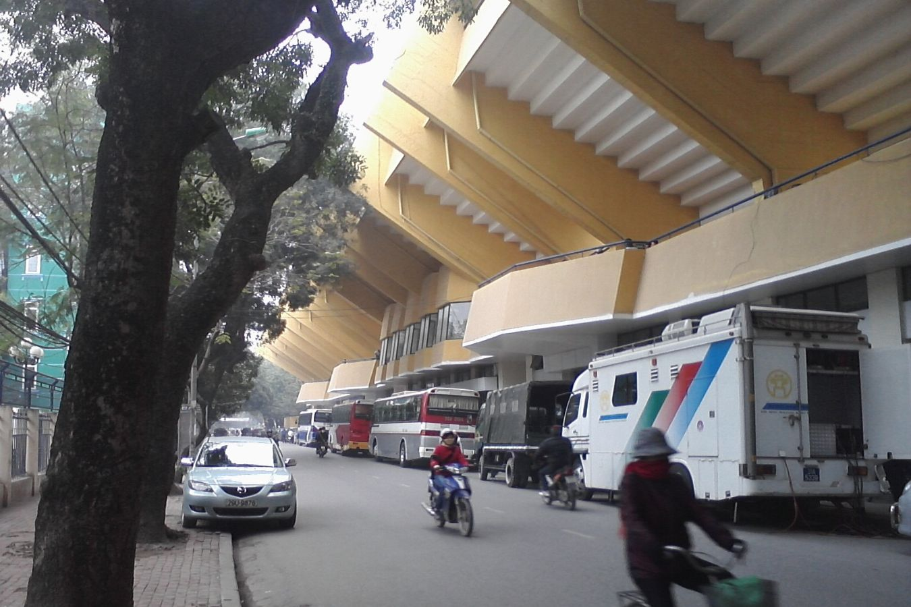
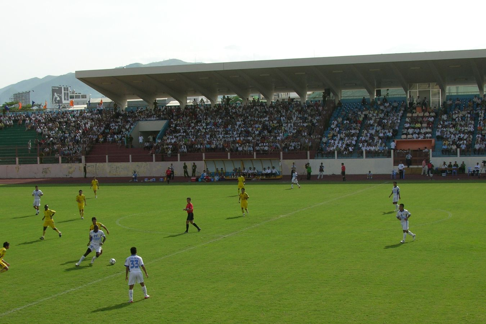

Club history
From a third-division start in 2006 to six V.League titles. Filter the timeline, jump to a year, or open any entry to read more.
- 1934
A football ground in the city Stadium
Football is first played on the site that becomes Hàng Đẫy.
A 400-seat wooden stand and surrounding walls followed in 1936–38, when the ground was known as SEPTO Stadium.

Hàng Đẫy today, beneath the main stand. Photo: Jspeed1310, public domain, via Wikimedia Commons.
- 1958
Hàng Đẫy as we know it Stadium
Rebuilt from 1956, the stadium reopened on 24 August 1958.
Until Mỹ Đình National Stadium was built it was Vietnam’s main football venue, and it hosted the final of the 1998 Tiger Cup.

Hàng Đẫy Stadium. Photo: Jspeed1310, public domain, via Wikimedia Commons.
- 2006
T&T Hà Nội is founded Club
Set up on 18 June 2006 by T&T Group, the club won the Third Division in its very first season.
The club played as T&T Hà Nội until 2009, then as Hà Nội T&T until 2016.
- 2007
Up again Club
Runners-up in the Second Division, for a second promotion in two years.
Three divisions in three seasons was the plan, and it worked.
- 2008
Promoted to the V.League Club
Runners-up in the First Division, earning a top-flight place from 2009.
The club has stayed in the top flight ever since.
- 2009
Moving into Hàng Đẫy Stadium
The first V.League season, played at the ground the club still calls home.
That year all four Hà Nội–based clubs used Hàng Đẫy. Công an Hà Nội still share it today, so a capital derby can be played there whichever side is at home.

T&T Hà Nội away at Khánh Hòa in the 2009 V.League. Photo: Vinhtantran, CC BY-SA 3.0, cropped, via Wikimedia Commons.
- 2010
First V.League title Champions
Champions in only the second top-flight season, playing as Hà Nội T&T.
The Vietnamese Super Cup followed in the same year.
- 2013
Second title Champions
Champions of Vietnam for the second time.
In the 2014 AFC Cup the club reached the quarter-finals, losing 3–0 on aggregate to Erbil.
- 2014
Samson’s 23 goals Club
Hoàng Vũ Samson finished as the V.League’s top scorer with 23 goals.
Four years later he scored twice on the day the 2018 title was sealed.
- 2016
Third title, and a new name Champions
The club became Hà Nội FC, the name it still uses.
It was also runner-up in the National Cup that year.
- 2018
Champions with five rounds to spare Champions
Hoàng Vũ Samson scored twice on 9 September 2018 to seal the title after round 21 of 26.
Academy graduate Nguyễn Quang Hải won the Vietnamese Golden Ball, and the Super Cup was won too.
- 2019
League, Cup and Asia Champions
A fifth V.League title and the club’s first National Cup.
In the AFC Cup the club won the ASEAN zone and beat Nagaworld 10–0, its biggest ever win, before losing the inter-zone final to April 25 on away goals. Đỗ Hùng Dũng won the 2019 Golden Ball.
- 2020
Cup and Super Cup Champions
The National Cup and the Super Cup again.
Captain Nguyễn Văn Quyết won the 2020 Vietnamese Golden Ball, his first.
- 2022
The double Champions
A sixth V.League title, the most of any club since the league began in 2000, plus the National Cup.
The 2022 Super Cup completed the set of domestic trophies.
- 2023
Always in the top three Club
Second in 2023, third in 2023/24 and second in 2024/25.
The club also played in the group stage of the 2023/24 AFC Champions League.
- 2025
Harry Kewell takes charge Club
The former Leeds United and Liverpool winger was appointed head coach on 4 October 2025.
His first season ended in fourth place with 46 points.
- 2026
A derby to remember Club
A 2–1 win over Công an Hà Nội on 18 October ended their unbeaten start to the season.
Phạm Xuân Mạnh scored after 18 minutes, and Nguyễn Văn Tùng restored the lead soon after Công an Hà Nội equalised.
No entries in this category.